BlockOut — Sự kiện, vòng đời và điều phối phần thưởng
Ngày kiểm tra: 10/10/2026 · BlockOut · 1006 đang cài và mã decompile 1006 (14/09/2026).
Đọc ảnh theo phiên và theo trạng thái
Các gallery đặt cạnh luật và use case để phân biệt màn giới thiệu, tiến độ, phần thưởng và kết thúc. Gallery gắn nhãn lịch sử dùng ảnh phiên khảo sát 07/10/2026, đã được lập mục lục trong screens/web/screens.json; tài khoản khảo sát có chuẩn bị tiến độ và kho vật phẩm, nên ảnh không chứng minh một hành trình tự chơi từ đầu. Dragon Treasure và Web Shop được ghi riêng là ép bật local; Paw Touch là kết quả thử không mở được offer. Atlas được ghi là tài nguyên APK, không tính là màn hình game đã quan sát.
Bộ ảnh event và các case kiểm chứng ngày 13/10 là phần bổ sung riêng cho đợt chụp mới. Các mức giá, timer và bảng thưởng trong ảnh cũ cần đọc theo ngày chụp, đối chiếu config đúng phiên.
Những trạng thái đã bổ sung ngày 13/10
Bộ ảnh mới đã đi sâu hơn màn giới thiệu: Mission Carnival nhận từng nhiệm vụ rồi mở rương stage; Lily Leap dựng nhánh thắng/chia giải và nhánh thua; UFO lên đỉnh 120 và giữ lại checkpoint 46; Pass nhận một mốc premium và xem Vault; Collection hoàn tất album thường rồi chuyển sang Grand Nature Collection. Đây là kiểm chứng UI với fixture local, không phải các event live được server tự phát hoặc thành tích tự chơi trong ngày.
Hai giới hạn vẫn giữ rõ: Rocket Race mở nhánh cuối gặp lỗi mạng; Arena mới xác nhận sảnh và Round 1, chưa mở được leaderboard. Weekly đã có màn kết quả hạng 1 nhưng chưa nhấn Continue nhận thưởng. Xem nhật ký ảnh và bằng chứng từng nhánh.
Vòng đời sự kiện và điều kiện cùng tồn tại
Luồng chung: cấu hình cho phép → đủ tiến độ → có dữ liệu phiên → asset sẵn sàng → giới thiệu/join → chơi và tích điểm → kết thúc tại local hoặc remote → claim → đồng bộ. Thứ tự kiểm tra cụ thể khác theo service; không phải mọi event đều có nút Join hay cùng enum trạng thái.
Một kỳ hết giờ vẫn có thể phải hiện popup kết quả hoặc quà chưa nhận. Vì vậy Finished trên Home không đồng nghĩa lỗi timer, và icon chưa biến mất không có nghĩa event tiếp tục tính điểm. Case quan trọng là thắng ngay sát thời điểm hết kỳ: điểm được ghi cho instance nào, có phát thưởng hai lần không, và UI xử lý phản hồi trễ ra sao.
Bốn loại “mất tiến độ” cần tách biệt
1. Mất hệ số nhưng giữ điểm đã tích: chi phí là tốc độ kiếm điểm ở các màn sau. 2. Rơi về checkpoint: chỉ mất phần tiến độ sau chốt gần nhất. 3. Mất chuỗi/loại khỏi lượt đua: có thể cần join lượt mới hoặc chờ cooldown. 4. Mất cơ hội xếp hạng theo thời gian: đối thủ tiến lên trong khi mình dừng, dù điểm bản thân không bị trừ.
Các popup dùng chung chữ “streak” không làm bốn loại này tương đương. Cần dùng state và model của từng event để viết luật.
Hệ thống thưởng chéo
Level là nguồn hoạt động chính. Event điểm/mốc phát coin, booster, thời gian vô hạn; collection đổi loại thưởng sang card pack; nhiệm vụ meta đọc tiến độ của event khác. Thiết kế này tạo nhiều mục tiêu trên một lần thắng, nhưng cũng tạo phụ thuộc: một nhiệm vụ có thể không làm được nếu event nguồn chưa mở, hết lịch, chưa join hoặc thiếu bundle.
Đối với nhiệm vụ “đạt mốc”, cần phân biệt backfill từ tiến độ đã có với chỉ tính hành động mới. Đối với “thắng cuộc đua”, thắng một level không đồng nghĩa thắng cả race. Các báo cáo nên ghi rõ đơn vị: win, key, duck, star, stage, tier hoặc rank.
Đối kháng, bot và giới hạn kết luận
Bảng hạng hoặc race là cạnh tranh gián tiếp trong khi mỗi người giải bàn riêng. Không tìm được bằng chứng cho một bàn chơi chung có hai người thao tác đồng thời trong phạm vi dữ liệu đang dùng. Cờ IsBot của một response là bằng chứng cho những entry đó; avatar có sẵn, thiếu isMe hoặc đúng 1.000 dòng không đủ để kết luận cả bảng là người giả. Tỷ lệ bot của một race không đại diện mọi race, mọi quốc gia hay toàn bộ game.
Treasure Drill: kiểm tra bằng mã
Progress tăng tích lũy, và từng step so progress hiện tại với threshold; các mốc là 1,3,5,10,15,20,30,40,50,70,80,120. Mốc cuối là 120, không cộng các threshold thành 444. Reward coin lần lượt 50,100,150,250,300,400,500,600,750,900,1000,5000: tổng 10.000, trong đó 50% nằm ở bước cuối. Với cửa sổ trọn 5 ngày, đích 120 tương đương 24 lần tăng tiến độ/ngày; người vào muộn cần nhịp cao hơn. Phải kiểm tra việc mua có hồi tố các mốc đã đạt và xử lý hết hạn.
Nguồn xác minh MagicSort: TreasureDrillDataService.CheckStepIsEligibleToClaim, GetProgress, IncreaseTaskProgressAndGetStepIdIfCompleted (RVA 0x27A1468), GetLastStepScore trong RecoveredNative/PseudoC/Assembly-CSharp. Không suy rộng RVA này cho BlockOut; hồ sơ BlockOut có tập nguồn riêng.
Danh mục sự kiện trong hồ sơ
Masters Arena (giải đấu theo bộ màn riêng)
Lớp nguồn: hồ sơ decompile/default đã có. Giá trị ở phần đối chiếu 10/10 phía trên được ưu tiên khi khác nhau; bảng dưới mô tả các đường có trong mã, không khẳng định mọi cổng đều bật.
Giải đấu xếp hạng chạy trên một bộ màn riêng, tách khỏi tiến độ chính. Người chơi tham gia, chơi các màn Arena để kiếm điểm, và được xếp hạng với những người cùng giải. Hết giờ thì nhận thưởng theo thứ hạng. Đây là sự kiện nặng nhất về mặt đồng bộ vì bảng xếp hạng phải khớp giữa điểm lưu cục bộ và điểm server ghi nhận.
Điều kiện: Điều kiện do backend quyết định qua ArenaEligibilityStatus; client chỉ hiển thị. Có bốn trạng thái đủ điều kiện: CanJoin, ShowUpdatePopUp (phải cập nhật app), NewLevelsIncoming (đang chờ bộ màn mới), Invalid.
Luồng: UpdateStateStartOfSession() chạy đầu phiên, gọi FetchArenaEligibilityStateAsync() hỏi backend xem tài khoản có được vào giải không. Vào giải qua TryJoinArenaAsync() trả ArenaJoinResponseState (Success / Failed / NotAvailable). Trong giải, mỗi màn thắng gọi EarnCollectable(difficulty) cộng điểm theo độ khó. FetchArenaLeaderboardAsync() lấy bảng xếp hạng; ChangeArenaCache so với bản cache cũ; CreateLeaderboardFromResponse dựng danh sách; ChoosePlayerScore(isMe, isFinished, localScore, remoteScore) là chỗ xử lý tinh tế nhất — với chính người chơi thì dùng điểm cục bộ (mới hơn) khi giải chưa kết thúc, và dùng điểm server khi đã kết thúc, tránh cảnh điểm nhảy lùi. AssignTournamentRewardsAndSetRanks gán thưởng và hạng sau khi sắp xếp. ScheduleLeaderboardFetchOnTimerEnd hẹn lấy lại bảng khi hết giờ. Kết thúc, ClaimArenaAsync() nhận thưởng, trả ArenaClaimResponseState. ShouldForceOpenPopUp và IsElapsedNLevelsSinceLastSeen quyết định khi nào tự mở popup; ShouldShowRankUp bật popup khi hạng tăng. Arena còn có hệ poster: CanShowLeaguePoster / CanSelectLeaguePoster / GetPosterSelected — đây chính là các bundle poster*_thumbnail_v1 được tải về máy.
| Use case | Kích hoạt / tiền điều kiện | Kết quả / quy tắc | Bằng chứng trong hồ sơ |
|---|---|---|---|
| Kiểm tra đủ điều kiện vào giải | Bắt đầu phiên chơi; - | Biểu tượng Arena hiện hoặc ẩn tương ứng; UpdateBuild nghĩa là phiên bản app quá cũ so với bộ màn Arena hiện tại — game bắt cập nhật thay vì cho vào | ArenaService.UpdateStateStartOfSession; FetchArenaEligibilityStateAsync; enum ArenaEligibilityState; enum ArenaEligibilityStatus |
| Tham gia giải | Bấm Enter ở popup Arena; ArenaEligibilityState = CanJoin | Vào giải, bộ màn Arena được kích hoạt; Bộ màn Arena: 10 màn mở đầu (InitialArenaLevels) rồi lặp trong 850 màn (ArenaLoopLevels); tên bộ 10-09-26-arena-colorgrinder-v212-v1 | ArenaService.TryJoinArenaAsync; enum ArenaJoinResponseState; enum ArenaPopupType; ArenaLevelsConfig.json |
| Kiếm điểm bằng cách thắng màn Arena | Thắng một màn trong giải; Đang trong giải | Điểm tăng, thứ hạng có thể đổi; Màn khó cho nhiều điểm hơn | ArenaService.EarnCollectable; GetCurrentScore; GetAddedLobbyButtonCollectableForAnimation |
| Xem bảng xếp hạng | Mở popup Arena; - | Bảng xếp hạng với thưởng dự kiến từng hạng; Điểm của chính mình ưu tiên bản cục bộ khi giải chưa kết thúc để không bị tụt ngược khi server chưa kịp cập nhật | ArenaService.FetchArenaLeaderboardAsync; ChoosePlayerScore; AssignTournamentRewardsAndSetRanks; ArenaLeaderboardSwipeController |
| Nhận thưởng khi giải kết thúc | Hết giờ giải; Có thứ hạng | Nhận coin theo hạng; Hạng 1:  3.000 coin, hạng 2: 2.000, hạng 3: 1.000, hạng 4–10: 250 mỗi người (OtherRanksLimit = 10). Giống nhau ở client và server 3.000 coin, hạng 2: 2.000, hạng 3: 1.000, hạng 4–10: 250 mỗi người (OtherRanksLimit = 10). Giống nhau ở client và server | ArenaService.ClaimArenaAsync; GetRewardAmountWithRank; ClearArenaTournamentData; ArenaConfigModel.Rewards |
| Popup tự mở khi lên hạng | Thứ hạng tăng so với lần xem trước; ShouldOpenPopUpAutomaticallyOnRankUp = true | Người chơi biết mình vừa vượt ai; ShowPopUpIntervalOnRankUp = 1 (mỗi lần lên hạng đều báo) | ArenaService.ShouldShowRankUp; IsElapsedNLevelsSinceLastSeen; enum ArenaLeaderboardPopupImpressionSource; ArenaConfigModel |
| Chọn poster giải đấu | Mở màn hình Arena; CanShowLeaguePoster | Poster hiển thị ở nền Arena; Trên máy đã kéo dữ liệu, thư mục AssetBundles chứa đúng 16 bundle poster (poster4..poster19 _thumbnail_v1), tổng 5 MB — đây là toàn bộ bundle mà game đã tải về sau vài phiên chơi | ArenaService.CanShowLeaguePoster; CanSelectLeaguePoster; SetPosterSelected; DeviceRuntime external/files/AssetBundles |
Ảnh minh họa và cách đọc trạng thái
Kho cũ chỉ có atlas Arena. Hình này giúp nhận diện chủ đề mỹ thuật; chưa chứng minh entry, ghép bảng hạng, chơi màn Arena hoặc nhận thưởng đã chạy. Các nhánh trong bảng phía trên vẫn là kết luận từ mã/cấu hình.
Nguồn ảnh lịch sử: phiên khảo sát 07/10/2026, screens/web/Arena/; đối chiếu caption và mã raw trong screens/web/screens.json. Các ảnh giữ trạng thái và giá của lần chụp, không đại diện lịch phát event hoặc giá hiện tại.

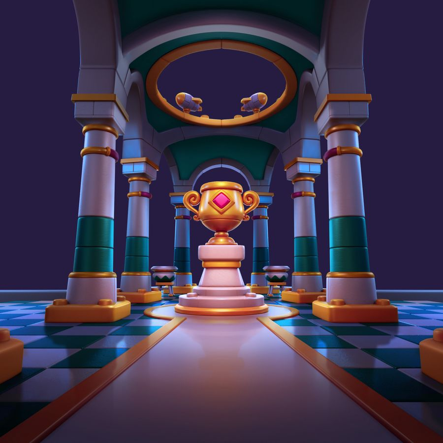
Đọc tiếp: Bộ ảnh event và trạng thái kiểm chứng ngày 13/10. Bài đó tách ảnh quan sát phiên mới với ảnh dựng bằng fixture; không dùng ảnh lịch sử ở đây để xác nhận case mới.
Cập nhật ảnh kiểm chứng 13/10/2026
OBSERVED-FIXTURE: ảnh chụp giao diện thật trong LDPlayer sau khi chuẩn bị trạng thái cục bộ và cô lập mạng. Case: gán cache giải QA và trạng thái Arena → Home đổi sang sảnh cúp, nút Round 1, icon hạng 3. Đây là ảnh runtime mới bổ sung cho atlas lịch sử; chạm icon chưa mở được bảng xếp hạng, nên chưa xác nhận đối thủ hoặc thưởng của giải live.

Nguồn: ảnh gốc screens/events_20261013/, caption được tuyển chọn trong facts/report_20261013/event_capture_manifest.json. Thiết lập, thao tác và giới hạn của từng case. Trạng thái gán trước không phải thành tích chơi; chỉ ghi nhận cấp thưởng cục bộ khi có snapshot đối soát.
Hồ sơ đầy đủ: Arena. Nguồn gốc: gdd/Arena.json; đây là phân tích mã/cấu hình, không mặc nhiên là case đã chạy.
Block Pass (battle pass)
Lớp nguồn: hồ sơ decompile/default đã có. Giá trị ở phần đối chiếu 10/10 phía trên được ưu tiên khi khác nhau; bảng dưới mô tả các đường có trong mã, không khẳng định mọi cổng đều bật.
Battle pass của game: thắng màn kiếm chìa, chìa đẩy qua các mốc, mỗi mốc có một phần thưởng miễn phí và một phần thưởng trả phí. Mua pass thì mở khoá toàn bộ nhánh trả phí, kể cả các mốc đã qua. Hết 31 mốc chính thì sang chế độ 'vault' — 50 mốc phụ, mỗi mốc  20 chìa đổi 100 coin. Trong code tên là MagicPass (di sản Magic Sort), trong config là BlockPass.
20 chìa đổi 100 coin. Trong code tên là MagicPass (di sản Magic Sort), trong config là BlockPass.
Điều kiện: BlockPassConfigModel.FirstLevelToShow = 50, IsEnabled = true (client và server giống nhau).
Luồng: TryFetchCurrentEvent / FetchCurrentEvent hỏi backend sự kiện đang chạy; TryStartNewEvent(response) khởi tạo kỳ mới với GetEventId, GetStartTimeAsUnix, GetFinishTime và GetSegment (phân khúc người chơi). Thắng màn -> TryIncreaseProgress(levelDifficulty) -> GetKeyIncreaseCountByLevelDifficulty(difficulty) -> AddKey(keyCount). Số chìa hiện tại quy ra mốc qua GetStepByKeyCount(keyCount); GetCurrentStepProgress / GetCurrentStepMaxProgress cho thanh tiến độ trong mốc. Nhận thưởng: IsFreeStepClaimable / IsPaidStepClaimable rồi ClaimFreeStep(step) / ClaimPaidStep(step) -> GiveStepRewards(stepModel, isPaidReward). Kích hoạt pass: ActivatePass(activationSource) mua IAP rồi MarkPassAsActivated, sau đó QueueUnclaimedRewards / GiveUnclaimedRewardsInQueue trao bù toàn bộ nhánh trả phí đã bỏ lỡ; GetMergedUnclaimedRewards gộp các phần thưởng cùng loại lại cho gọn (TryMergeReward). Hết 31 mốc thì AllDefaultStepsCompleted() đúng và chuyển sang vault: GetVaultStepsCount (50), GetVaultStepKeyCount (20), GetCurrentVaultCoinAmount cộng dồn, MarkVaultAsClaimed khi nhận. Kết thúc kỳ: IsTimeUp, MarkEventAsFinished, SendClaimEventRequest, MarkEventAsClaimedLocally.
| Use case | Kích hoạt / tiền điều kiện | Kết quả / quy tắc | Bằng chứng trong hồ sơ |
|---|---|---|---|
| Kiếm chìa bằng cách thắng màn | Thắng một màn; Kỳ pass đang chạy | Thanh pass tiến lên; NormalLevelKeyCount 1 / HardLevelKeyCount 3 / SuperHardLevelKeyCount 5 | MagicPassService.TryIncreaseProgress; GetKeyIncreaseCountByLevelDifficulty; AddKey; BlockPassConfigModel |
| Nhận thưởng miễn phí ở một mốc | Bấm nhận ở mốc đã đạt; IsFreeStepClaimable(step) | Nhận phần thưởng nhánh miễn phí; 31 mốc chính, ngưỡng chìa tăng dần: 0, 1, 3, 5, rồi 10 (×6), 20 (…), tới 75 và 100 ở các mốc cuối | MagicPassService.ClaimFreeStep; IsFreeStepClaimable; GiveStepRewards; BlockPassConfigModel.Steps |
| Mua pass và nhận bù toàn bộ nhánh trả phí | Bấm kích hoạt pass; Chưa mua | Nhận một loạt phần thưởng dồn lại; MagicPassActivationSource có 6 giá trị, trong đó Refill và Stuck cho thấy game chào bán pass đúng lúc người chơi hết mạng hoặc vừa thua | MagicPassService.ActivatePass; QueueUnclaimedRewards; GetMergedUnclaimedRewards; TryMergeReward; enum MagicPassActivationSource |
| Chuyển sang chế độ vault sau khi hết mốc | Nhận hết 31 mốc chính; AllDefaultStepsCompleted() | Chìa dư vẫn có giá trị thay vì bỏ phí; VaultStepCount 50 × VaultStepKeyCount 20 = 1.000 chìa để lấy hết vault; mỗi mốc 100 coin (VaultStepCoinAmount), tối đa 5.000 coin | MagicPassService.GetVaultStepsCount; GetVaultStepKeyCount; GetCurrentVaultCoinAmount; AllVaultStepsCompleted; BlockPassConfigModel |
| Thưởng đổi khi Collection đang bật | Nhận thưởng mốc trong lúc sự kiện Collection chạy; - | Một số phần thưởng đổi thành thẻ bộ sưu tập; Mỗi mốc trong config có bốn trường thưởng: FreeReward, PaidReward, FreeRewardWithCollection, PaidRewardWithCollection | MagicPassService.GetStepReward; BlockPassConfigModel.Steps[].FreeRewardWithCollection |
| Biểu tượng ở Home báo tiến độ | Quay về Home; - | Người chơi thấy rõ vừa kiếm được bao nhiêu chìa; - | MagicPassService.IsLobbyIconVisible; GetCurrentLobbyIconProgress; ShouldShowCollectibleEarnAnimationOnLobbyReturn |
| Kết thúc kỳ pass | Hết thời gian kỳ; - | Không mất thưởng đã kiếm được; - | MagicPassService.IsTimeUp; ShouldShowFinishedPopUp; SendClaimEventRequest; MarkEventAsClaimedLocally; ResetProgress |
| Pass cấp mạng khi hết mạng | Hết mạng; Pass đang hoạt động | Pass có quyền lợi dùng trong màn chứ không chỉ là thưởng mốc; TicketClaimReward = 50 coin | MagicPassService.IsPlayOnActive; MarkPlayOnAsUsed; BlockPassConfigModel.TicketClaimReward |
Ảnh minh họa và cách đọc trạng thái
Đọc lần lượt: nhánh Free/Paid → mốc đã đủ điều kiện và chờ Claim → Vault phía cuối nhưng còn khóa → thưởng chưa nhận lúc hết kỳ. Vault xuất hiện trên track chưa đồng nghĩa Vault đã mở; ảnh mua/Activate cũng chưa chứng minh đã có quyền premium.
Nguồn ảnh lịch sử: phiên khảo sát 07/10/2026, screens/web/BlockPass/; đối chiếu caption và mã raw trong screens/web/screens.json. Các ảnh giữ trạng thái và giá của lần chụp, không đại diện lịch phát event hoặc giá hiện tại.

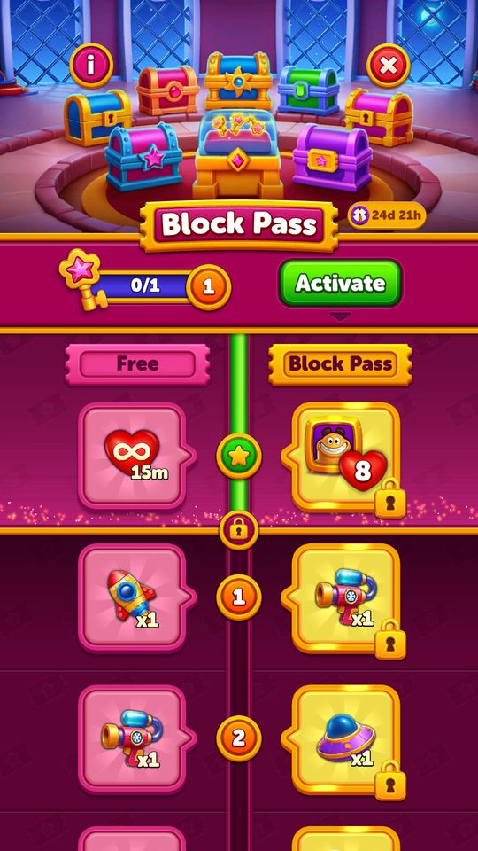
 15 phút mạng vô hạn, Pass tăng mạng tối đa lên 8; mốc 1–2: tên lửa, pháo, UFO
15 phút mạng vô hạn, Pass tăng mạng tối đa lên 8; mốc 1–2: tên lửa, pháo, UFO
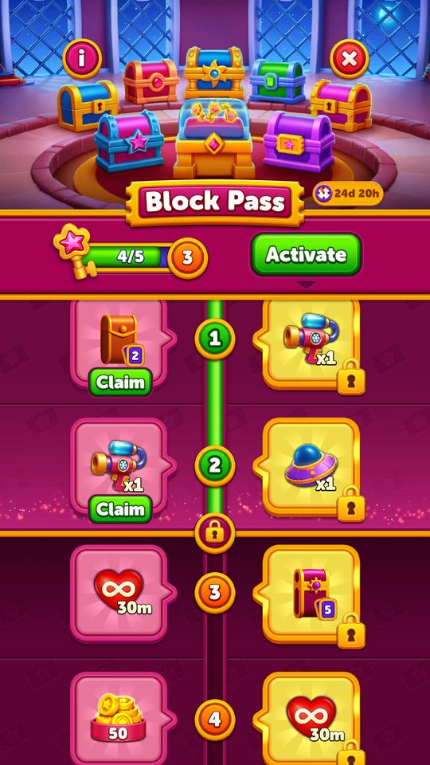
30 phút mạng, gói thẻ 5 sao)
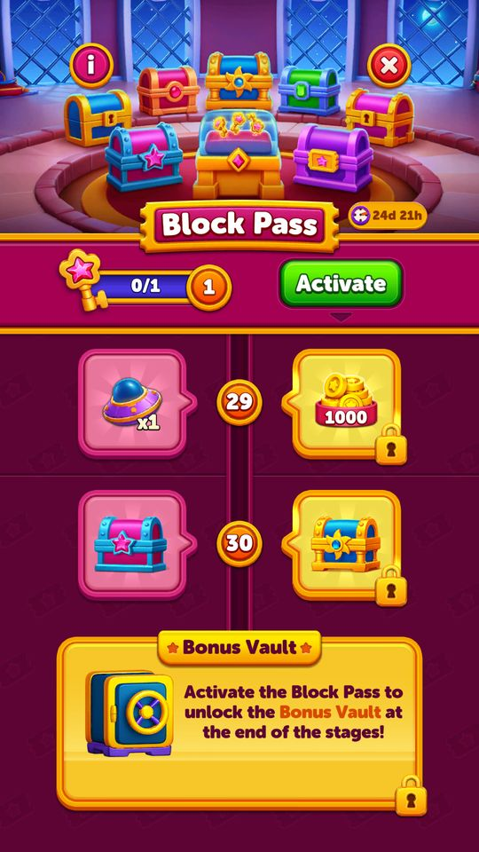
1.000 coin, rương lớn) và "Bonus Vault" — phải Activate Block Pass mới mở két thưởng cuối các mốc
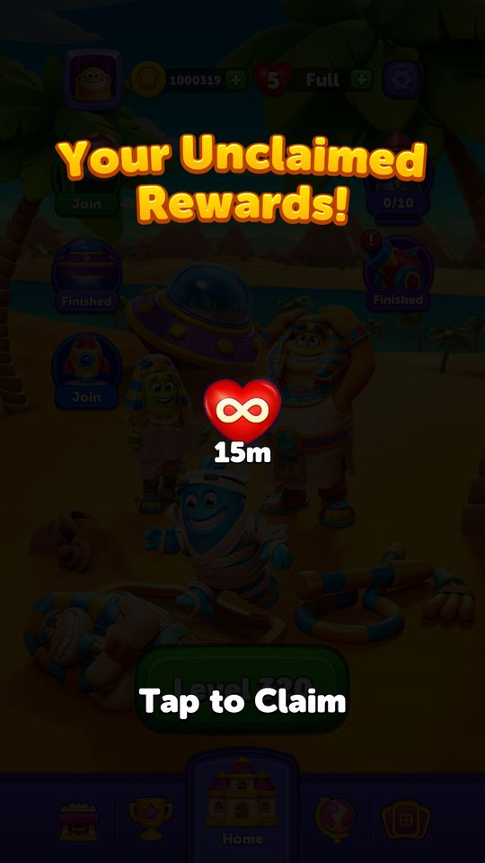
15 phút mạng vô hạnĐọc tiếp: Bộ ảnh event và trạng thái kiểm chứng ngày 13/10. Bài đó tách ảnh quan sát phiên mới với ảnh dựng bằng fixture; không dùng ảnh lịch sử ở đây để xác nhận case mới.
Cập nhật ảnh kiểm chứng 13/10/2026
OBSERVED-FIXTURE: ảnh chụp giao diện thật trong LDPlayer sau khi chuẩn bị trạng thái cục bộ và cô lập mạng. Case 1: gán premium → Home có  8 mạng, bấm Claim 100 coin ở bậc 3 → coin cục bộ tăng 996.179 lên 996.279. Case 2 độc lập: 1.054 chìa, đủ 31 bậc chính → dư 40 chìa → Vault 200/5.000. UI quy định nhận coin Vault khi event kết thúc; chưa test bước nhận này. Không mua IAP trong cả hai case.
8 mạng, bấm Claim 100 coin ở bậc 3 → coin cục bộ tăng 996.179 lên 996.279. Case 2 độc lập: 1.054 chìa, đủ 31 bậc chính → dư 40 chìa → Vault 200/5.000. UI quy định nhận coin Vault khi event kết thúc; chưa test bước nhận này. Không mua IAP trong cả hai case.
 8 mạng Full thay mức 5; icon Block Pass có huy hiệu 5 phần thưởng khả dụng. Không thực hiện thanh toán IAP để tạo trạng thái này.
8 mạng Full thay mức 5; icon Block Pass có huy hiệu 5 phần thưởng khả dụng. Không thực hiện thanh toán IAP để tạo trạng thái này. 100 coin ở nhánh premium bậc 3, nút đổi thành dấu tích. Snapshot pass-paid-after ghi coin 996.179 → 996.279 và claimedPaidSteps = (3), xác nhận đã cộng 100 coin cục bộ; chưa xác minh server grant.
100 coin ở nhánh premium bậc 3, nút đổi thành dấu tích. Snapshot pass-paid-after ghi coin 996.179 → 996.279 và claimedPaidSteps = (3), xác nhận đã cộng 100 coin cục bộ; chưa xác minh server grant. 1.054 chìa và đã nhận toàn bộ 31 bậc dữ liệu (bậc 0–30). Trừ ngưỡng 1.014 chìa còn 40 chìa dư: theo mức 20 chìa đổi 100 coin, Bonus Vault hiển thị 200/5.000 coin và thanh tiếp theo 0/20. UI ghi chỉ nhận coin trong Vault khi sự kiện kết thúc.
1.054 chìa và đã nhận toàn bộ 31 bậc dữ liệu (bậc 0–30). Trừ ngưỡng 1.014 chìa còn 40 chìa dư: theo mức 20 chìa đổi 100 coin, Bonus Vault hiển thị 200/5.000 coin và thanh tiếp theo 0/20. UI ghi chỉ nhận coin trong Vault khi sự kiện kết thúc.Nguồn: ảnh gốc screens/events_20261013/, caption được tuyển chọn trong facts/report_20261013/event_capture_manifest.json. Thiết lập, thao tác và giới hạn của từng case. Trạng thái gán trước không phải thành tích chơi; chỉ ghi nhận cấp thưởng cục bộ khi có snapshot đối soát.
Hồ sơ đầy đủ: BlockPass. Nguồn gốc: gdd/BlockPass.json; đây là phân tích mã/cấu hình, không mặc nhiên là case đã chạy.
Bộ sưu tập thẻ
Lớp nguồn: hồ sơ decompile/default đã có. Giá trị ở phần đối chiếu 10/10 phía trên được ưu tiên khi khác nhau; bảng dưới mô tả các đường có trong mã, không khẳng định mọi cổng đều bật.
Sự kiện sưu tầm thẻ: mở gói thẻ nhận được từ nhiều nguồn, ghép đủ bộ để nhận thưởng lớn. Thẻ có 1–5 sao và biến thể vàng; thẻ hiếm hơn thì tỉ lệ ra thấp hơn. CollectionService là class lớn nhất toàn game với 125 method. Khi sự kiện này bật, rất nhiều phần thưởng ở các tính năng khác tự đổi sang biến thể 'WithCollection' để rót thêm thẻ vào hệ thống.
Điều kiện: CollectionConfigModel.FirstLevelToShow = 95, IsEnabled = true. MinBundleDownloadLevel = 20 là mốc bắt đầu tải trước bộ ảnh thẻ.
Luồng: CollectionStateService cho CollectionStateType (NoCachedEvent, NotIntroduced, InProgress, TimeIsUp, Claimed, ClaimedAndTimeIsUp, InsufficientLevel, Disable). Thẻ được bốc theo CardMultipliers — bảng trọng số theo số sao và cờ thẻ vàng: 1 sao ×32, 2 sao ×24, 3 sao ×24, 4 sao ×16, 5 sao ×16, 5 sao vàng ×8. Nghĩa là thẻ 1 sao ra dễ gấp bốn lần thẻ 5 sao vàng. Mở gói chạy qua CollectionPackOpeningAnimationHandler và CollectionRewardAnimationService. BonusChests trao rương khi đạt mốc số sao (mốc đầu là 100 sao). CollectionPhase (Normal, Gold, Repeat) chia sự kiện thành ba giai đoạn: sưu tầm thường, săn thẻ vàng, rồi vòng lặp lại. CardSendRequestState cho thấy bản gốc Magic Sort có tính năng xin/tặng thẻ giữa bạn bè (SendActive, SendNotActiveDailyLimit, SendNotActiveNoDuplicate, SendNotActiveGoldCard, RequestActive, …, TeamsNotEnabled) — nhưng Block Out không có hệ thống Đội nên trạng thái TeamsNotEnabled là trạng thái thường trực. CollectionThemeColor có 14 màu chủ đề cho từng bộ thẻ.
| Use case | Kích hoạt / tiền điều kiện | Kết quả / quy tắc | Bằng chứng trong hồ sơ |
|---|---|---|---|
| Mở gói thẻ | Nhận CollectionPack và bấm mở; Sự kiện đang chạy | Nhận 1 hoặc nhiều thẻ; Trọng số: 1★ 32, 2★ 24, 3★ 24, 4★ 16, 5★ 16, 5★ vàng 8 — tổng 120, tức thẻ 5 sao vàng chiếm 6,7% | CollectionService; CollectionPackOpeningAnimationHandler; CollectionConfigModel.CardMultipliers |
| Đạt mốc sao nhận rương | Tổng số sao vượt mốc; - | Nhận rương thưởng; Có 3 mốc rương | CollectionConfigModel.BonusChests |
| Tải trước bộ ảnh thẻ | Đạt màn 20; - | Thẻ hiện ngay khi sự kiện mở ở màn 95, không phải chờ tải; Tải trước 75 màn so với lúc dùng — một cách giấu thời gian tải | CollectionConfigModel.MinBundleDownloadLevel; AssetManager |
| Các sự kiện khác đổi thưởng sang thẻ | Nhận thưởng ở sự kiện khác khi Collection đang bật; - | Thẻ được rót vào từ khắp nơi trong game; Ví dụ rõ nhất là Daily Reward: bảng thường 13 mục không có thẻ; bảng WithCollection 16 mục, trong đó gói thẻ chiếm 35% tổng trọng số và coin bị giảm từ 85% xuống 50% | DailyRewardConfigModelV2.*WithCollection; BlockPassConfigModel.Steps[].FreeRewardWithCollection; UfoRiseConfigModel.Steps[].RewardModelWithCollection |
| Ba giai đoạn của sự kiện | Tiến trình sưu tầm; - | Sự kiện kéo dài mà không cần thêm nội dung mới; ThemeRewards, CollectionReward, GoldCollectionReward là ba nhóm thưởng tương ứng | enum CollectionPhase; CollectionConfigModel.ThemeRewards / CollectionReward / GoldCollectionReward |
Ảnh minh họa và cách đọc trạng thái
Album, màn mở pack và Bonus Chest là ba trạng thái khác nhau. Album 0/135 cho mục tiêu dài hạn; nhãn New cho kết quả một pack; cửa hàng rương 100/250/500 sao dùng phần dư từ thẻ trùng. Ảnh rương chưa chứng minh đã đủ sao hoặc đã trừ sao thành công.
Nguồn ảnh lịch sử: phiên khảo sát 07/10/2026, screens/web/Collection/; đối chiếu caption và mã raw trong screens/web/screens.json. Các ảnh giữ trạng thái và giá của lần chụp, không đại diện lịch phát event hoặc giá hiện tại.
 10.000 coin + quả sồi + x5 booster; mỗi bộ (Forest, Desert, Garden, Caves, Zen, Outdoors…) 9 thẻ kèm quà riêng; nút Bonus Chest góc trên
10.000 coin + quả sồi + x5 booster; mỗi bộ (Forest, Desert, Garden, Caves, Zen, Outdoors…) 9 thẻ kèm quà riêng; nút Bonus Chest góc trên

Đọc tiếp: Bộ ảnh event và trạng thái kiểm chứng ngày 13/10. Bài đó tách ảnh quan sát phiên mới với ảnh dựng bằng fixture; không dùng ảnh lịch sử ở đây để xác nhận case mới.
Cập nhật ảnh kiểm chứng 13/10/2026
OBSERVED-FIXTURE: ảnh chụp giao diện thật trong LDPlayer sau khi chuẩn bị trạng thái cục bộ và cô lập mạng. Ba fixture riêng khảo sát sao trùng, bộ Forest và đủ 135 thẻ. 500 sao mở được ba lựa chọn rương; Forest hiện Completed. Sau chuỗi nhận thưởng toàn album, coin từ thưởng các bộ tăng 2.700, rương album tăng tiếp 10.000 cục bộ; Acorn Token được Equip. Vào lại album thấy Grand Nature Collection 0/135, giải 15.000 coin và booster ×8. Đây là bằng chứng vòng kế tiếp trên UI, không phải đã hoàn thành vòng Grand Nature.


 10.000 coin, Rocket/Freeze/UFO mỗi loại x5 và Acorn Token; bước tiếp theo Tap to Continue.
10.000 coin, Rocket/Freeze/UFO mỗi loại x5 và Acorn Token; bước tiếp theo Tap to Continue. 15.000 coin, token tím và booster x8; thời gian sự kiện vẫn 6d23h.
15.000 coin, token tím và booster x8; thời gian sự kiện vẫn 6d23h.Nguồn: ảnh gốc screens/events_20261013/, caption được tuyển chọn trong facts/report_20261013/event_capture_manifest.json. Thiết lập, thao tác và giới hạn của từng case. Trạng thái gán trước không phải thành tích chơi; chỉ ghi nhận cấp thưởng cục bộ khi có snapshot đối soát.
Hồ sơ đầy đủ: Collection. Nguồn gốc: gdd/Collection.json; đây là phân tích mã/cấu hình, không mặc nhiên là case đã chạy.
GAE — sự kiện thu thập chìa
Lớp nguồn: hồ sơ decompile/default đã có. Giá trị ở phần đối chiếu 10/10 phía trên được ưu tiên khi khác nhau; bảng dưới mô tả các đường có trong mã, không khẳng định mọi cổng đều bật.
Sự kiện thu thập: thắng màn kiếm chìa, chìa đẩy qua một thang 25 mốc thưởng. Điểm riêng của GAE là hệ số nhân theo chuỗi thắng (StreakMultipliers 1 / 5 / 10 / 25 / 100) — thắng liên tiếp thì mỗi màn cho gấp nhiều lần chìa, nên phần thưởng cuối thang chỉ thực sự với tới được nếu giữ chuỗi dài.
Điều kiện: GaeConfigModel.FirstLevelToShow = 29, IsEnable = true, EventType = 2.
Luồng: GaeService (60 method) hỏi backend kỳ hiện tại rồi dựng thang thưởng từ RewardSteps. Thắng màn cộng chìa nhân với hệ số chuỗi hiện tại. GaeStateService dùng GaeStateType riêng, thêm hai trạng thái so với mẫu chung: NotIntroducedEverInLifeTime (chưa từng thấy sự kiện này bao giờ) và AllStepsClaimed. GaeAnimationType phân biệt ba kiểu animation khi về Home: NoAnimation, OnlyProgressBar (chỉ chạy thanh), Reward (có quà bay ra). GaeRewardsSwipeController cho vuốt xem các mốc.
| Use case | Kích hoạt / tiền điều kiện | Kết quả / quy tắc | Bằng chứng trong hồ sơ |
|---|---|---|---|
| Kiếm chìa theo chuỗi thắng | Thắng màn; Sự kiện đang chạy | Chìa tăng nhanh dần khi giữ chuỗi; StreakMultipliers = [1, 5, 10, 25, 100] — chênh lệch 100 lần giữa bậc đầu và bậc cuối | GaeService; GaeConfigModel.StreakMultipliers |
| Nhận thưởng mốc | Đủ chìa cho mốc kế; - | Nhận quà; 25 mốc. Vài mốc đầu: 1 chìa → 30 phút mạng; 10 chìa → 50 coin; 200 →  1 TimeFreeze; 300 → 100 coin; 600 → rương. NeededKeyCount là số chìa cho riêng mốc đó, không phải cộng dồn 1 TimeFreeze; 300 → 100 coin; 600 → rương. NeededKeyCount là số chìa cho riêng mốc đó, không phải cộng dồn | GaeConfigModel.RewardSteps |
| Animation khi về Home | Quay về Home sau khi thắng; - | Phản hồi tương xứng với mức tiến triển; - | enum GaeAnimationType; GaeController |
| Lần đầu thấy sự kiện | Đạt màn 29; Chưa từng thấy GAE | Giới thiệu một lần trong đời tài khoản; Phân biệt với NotIntroduced (chưa giới thiệu kỳ này) | enum GaeStateType |
Ảnh minh họa và cách đọc trạng thái
Star Blaze trên UI dùng sao dù model có tên key/hat. Track cho biết mục tiêu; thanh Home cho biết lượng đang tích; thang x1/x5/x10/x25/x100 cho biết tốc độ kiếm ở lượt kế. Ảnh ở đầu track không xác nhận người chơi đã hoàn tất mốc 25.
Nguồn ảnh lịch sử: phiên khảo sát 07/10/2026, screens/web/GAE/; đối chiếu caption và mã raw trong screens/web/screens.json. Các ảnh giữ trạng thái và giá của lần chụp, không đại diện lịch phát event hoặc giá hiện tại.

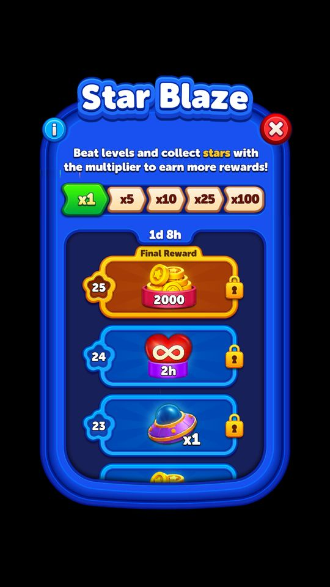
2.000 coin, 24 = 2 giờ mạng vô hạn, 23 =  UFO x1
UFO x1
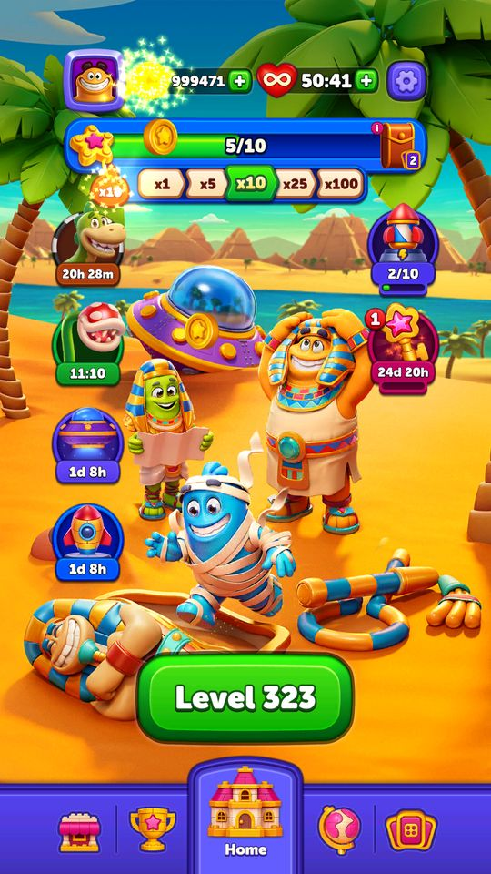

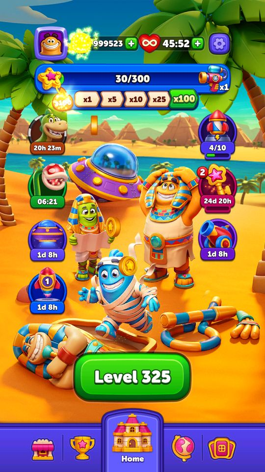
Đọc tiếp: Bộ ảnh event và trạng thái kiểm chứng ngày 13/10. Bài đó tách ảnh quan sát phiên mới với ảnh dựng bằng fixture; không dùng ảnh lịch sử ở đây để xác nhận case mới.
Cập nhật ảnh kiểm chứng 13/10/2026
OBSERVED-FIXTURE: ảnh chụp giao diện thật trong LDPlayer sau khi chuẩn bị trạng thái cục bộ và cô lập mạng. Hai fixture 21.711 và 21.811 tổng điểm. Fixture đầu hiển thị riêng bậc cuối 6.700/6.800, ×100, quà 2.000 coin còn khóa; fixture sau hiển thị Completed! / Finished. Chênh 100 điểm khớp phần thiếu ở bậc cuối, nhưng chưa chơi một màn để nối hai trạng thái và chưa xác nhận cộng 2.000 coin.
 2.000 coin. Cần phân biệt tổng điểm sự kiện với tiến độ đang hiển thị của riêng bậc cuối.
2.000 coin. Cần phân biệt tổng điểm sự kiện với tiến độ đang hiển thị của riêng bậc cuối. 2.000 coin và còn khóa; bậc 24 với 2 giờ mạng vô hạn, cùng bậc 23 với UFO ×1, đã có dấu tích. Đây là trạng thái gần hoàn tất ở fixture 21.711 điểm.
2.000 coin và còn khóa; bậc 24 với 2 giờ mạng vô hạn, cùng bậc 23 với UFO ×1, đã có dấu tích. Đây là trạng thái gần hoàn tất ở fixture 21.711 điểm.
Nguồn: ảnh gốc screens/events_20261013/, caption được tuyển chọn trong facts/report_20261013/event_capture_manifest.json. Thiết lập, thao tác và giới hạn của từng case. Trạng thái gán trước không phải thành tích chơi; chỉ ghi nhận cấp thưởng cục bộ khi có snapshot đối soát.
Hồ sơ đầy đủ: GAE. Nguồn gốc: gdd/GAE.json; đây là phân tích mã/cấu hình, không mặc nhiên là case đã chạy.
Jetpack Race (đua theo chặng)
Lớp nguồn: hồ sơ decompile/default đã có. Giá trị ở phần đối chiếu 10/10 phía trên được ưu tiên khi khác nhau; bảng dưới mô tả các đường có trong mã, không khẳng định mọi cổng đều bật.
Sự kiện đua có xếp hạng, chia làm ba chặng với phần thưởng tăng dần. Đây là sự kiện duy nhất trong game mà client biết đến khái niệm người chơi ảo: lớp JetpackRaceWithStageResponseUserModel có trường isBot.
Điều kiện: JetpackRaceWithStageConfigModel.FirstLevelToShow = 80, IsEnabled = true, EventType = 1.
Luồng: JetpackRaceWithStageStateService cho JetpackRaceWithStageStateType (Disable, ProgressNotEnough, NoCache, Join, InProgress, LocalTimeIsUp, RemoteTimeIsUp, ClaimedLocally). Người chơi bấm tham gia (JoinResult: ConnectionFail, EventEnded, Success), rồi thắng màn để tích điểm. Bảng xếp hạng do backend trả về dưới dạng JetpackRaceWithStageResponseUserModel, trong đó mỗi người chơi có cờ isBot. Ba chặng có ba gói thưởng riêng (Stage1/2/3RewardModels) và ba gói biến thể khi Collection đang chạy. JetpackRaceWithStagePopUpState và JetpackRaceWithStageImpressionSource (LobbyIcon, EventJoin, Result, StepIncrease, TryAgain) lo phần popup.
| Use case | Kích hoạt / tiền điều kiện | Kết quả / quy tắc | Bằng chứng trong hồ sơ |
|---|---|---|---|
| Tham gia sự kiện | Bấm Join; Đã đạt màn 80 | Vào bảng xếp hạng; - | enum JoinResult; enum JetpackRaceWithStageStateType |
| Tích điểm và vượt chặng | Thắng màn; - | Nhận thưởng từng chặng; Chặng 1: 100 coin + 15 phút mạng. Chặng 2: 300 coin + 45 phút mạng. Chặng 3: 500 coin + 1 TimeFreeze +  1 Rocket + 1 UFO + 1 giờ mạng. Khi Collection chạy: chặng 1 giảm còn 50 coin + 15 phút + 1 gói thẻ 1 Rocket + 1 UFO + 1 giờ mạng. Khi Collection chạy: chặng 1 giảm còn 50 coin + 15 phút + 1 gói thẻ | JetpackRaceWithStageConfigModel.Stage*RewardModels |
| Người chơi ảo trong bảng xếp hạng | Backend trả bảng; - | Bảng xếp hạng có thể gồm cả tài khoản ảo do server sinh; Đây là lớp duy nhất trong toàn bộ Assembly-CSharp có trường isBot. Tôi đã tra toàn bộ các lớp có [JsonProperty("isBot")] và chỉ có đúng một kết quả. Lớp LeaderboardPlayer của bảng xếp hạng thường không có trường này, nên không thể kết luận gì về bot ở các bảng khác | Blockout.V2.JetpackRaceWithStageResponseUserModel (trường isBot); tra toàn bộ dump.cs |
| Kết thúc và nhận thưởng | Hết giờ; - | Chốt sự kiện; - | enum JetpackRaceWithStageStateType; enum JetpackRaceWithStagePopUpState |
Ảnh minh họa và cách đọc trạng thái
Bộ ảnh đi từ lời mời Rocket Race tới bảng đua chặng 1, kết quả thắng chặng 1 và lời mời chặng 3. Mở được chặng 3 không đồng nghĩa đã thắng toàn event. Phần thưởng/hệ số đối thủ phải gắn với đúng chặng trong caption.
Nguồn ảnh lịch sử: phiên khảo sát 07/10/2026, screens/web/JetpackRace/; đối chiếu caption và mã raw trong screens/web/screens.json. Các ảnh giữ trạng thái và giá của lần chụp, không đại diện lịch phát event hoặc giá hiện tại.

 5 tên lửa (mình + 4 đối thủ), mỗi màn thắng ngay lần đầu = +1, ai đủ 3 trước về nhất; rương lớn ở đích
5 tên lửa (mình + 4 đối thủ), mỗi màn thắng ngay lần đầu = +1, ai đủ 3 trước về nhất; rương lớn ở đích 1 Rocket Race: tên lửa của mình bay tới đích hạng 1 — "Congratulations! You've won the race!", nút Claim nhận rương chặng
1 Rocket Race: tên lửa của mình bay tới đích hạng 1 — "Congratulations! You've won the race!", nút Claim nhận rương chặng
Đọc tiếp: Bộ ảnh event và trạng thái kiểm chứng ngày 13/10. Bài đó tách ảnh quan sát phiên mới với ảnh dựng bằng fixture; không dùng ảnh lịch sử ở đây để xác nhận case mới.
Cập nhật ảnh kiểm chứng 13/10/2026
OBSERVED-FIXTURE: ảnh chụp giao diện thật trong LDPlayer sau khi chuẩn bị trạng thái cục bộ và cô lập mạng. Case: chuẩn bị cache nhánh cuối rồi mở kết quả khi offline → No Internet Connection. Kết quả này thu hẹp giới hạn của kho ảnh: đã thử nhánh cuối nhưng chưa có ảnh chiến thắng/trao thưởng cuối chạy thành công. Không đổi nhãn case bị chặn thành đã thắng.

Nguồn: ảnh gốc screens/events_20261013/, caption được tuyển chọn trong facts/report_20261013/event_capture_manifest.json. Thiết lập, thao tác và giới hạn của từng case. Trạng thái gán trước không phải thành tích chơi; chỉ ghi nhận cấp thưởng cục bộ khi có snapshot đối soát.
Hồ sơ đầy đủ: JetpackRace. Nguồn gốc: gdd/JetpackRace.json; đây là phân tích mã/cấu hình, không mặc nhiên là case đã chạy.
Magic Lab (nhiệm vụ tổng hợp)
Lớp nguồn: hồ sơ decompile/default đã có. Giá trị ở phần đối chiếu 10/10 phía trên được ưu tiên khi khác nhau; bảng dưới mô tả các đường có trong mã, không khẳng định mọi cổng đều bật.
Sự kiện nhiệm vụ: hoàn thành các nhiệm vụ trải khắp các sự kiện khác của game để nhận thưởng. Đây là lớp 'meta' nối các sự kiện lại với nhau — MagicLabTaskType cho thấy nhiệm vụ kéo từ SuperHard/Hard level, JetpackRace, StreakRace, UfoRise, SkyJump và GAE.
Điều kiện: MagicLabConfigModel.FirstLevelToShow = 100. Client mặc định tắt (IsEnabled false) nhưng server đang bật; EventType client 4, server 7.
Luồng: MagicLabDataService (55 method) lưu tiến độ từng nhiệm vụ; MagicLabService (41 method) nhận tín hiệu từ các sự kiện khác và cộng tiến độ. MagicLabTaskType liệt kê 7 loại nhiệm vụ: SuperHardLevel, HardLevel, JetpackRaceWin, StreakRaceScoreReach, UfoRiseStepReach, SkyJumpWin, GaeStepReach. AutoClaimEnabled quyết định thưởng có tự vào túi hay phải bấm nhận. MagicLabPopUpState (FirstShowEver, FirstShow, InProgress, Result) lo popup; MissionCarnivalHeroImageController cho thấy sự kiện này còn có tên gọi khác trong nội bộ là 'Mission Carnival'.
| Use case | Kích hoạt / tiền điều kiện | Kết quả / quy tắc | Bằng chứng trong hồ sơ |
|---|---|---|---|
| Hoàn thành nhiệm vụ từ sự kiện khác | Thắng màn SuperHard / thắng Jetpack Race / đạt bậc UfoRise…; Sự kiện đang chạy | Tiến độ nhiệm vụ tăng; 7 loại nhiệm vụ trong MagicLabTaskType: SuperHardLevel=1, HardLevel=2, JetpackRaceWin=3, StreakRaceScoreReach=4, UfoRiseStepReach=5, SkyJumpWin=6, GaeStepReach=7 | MagicLabService; enum MagicLabTaskType |
| Nhận thưởng nhiệm vụ | Nhiệm vụ hoàn thành; - | Nhận quà; AutoClaimEnabled = false ở cả client và server — người chơi phải mở popup để nhận, tức game kéo được thêm một lượt mở app | MagicLabConfigModel.AutoClaimEnabled |
| Sự kiện được server bật | Firebase Remote Config; - | Sự kiện chạy dù bản build gốc tắt nó; Đây là ví dụ rõ nhất về việc đọc riêng config client sẽ cho kết luận sai | appendix/config-default-vs-live.md; MagicLabConfigModel |
Ảnh minh họa và cách đọc trạng thái
Mission Carnival đọc tiến độ từ event khác: hoàn thành điều kiện sẽ bật CLAIM; bấm CLAIM mới đổi nhiệm vụ sang COMPLETED và thêm bóng vào pháo. Hai bóng nhiệm vụ không có nghĩa đã nhận rương stage hoặc đã vượt cả năm stage.
Nguồn ảnh lịch sử: phiên khảo sát 07/10/2026, screens/web/MagicLab/; đối chiếu caption và mã raw trong screens/web/screens.json. Các ảnh giữ trạng thái và giá của lần chụp, không đại diện lịch phát event hoặc giá hiện tại.

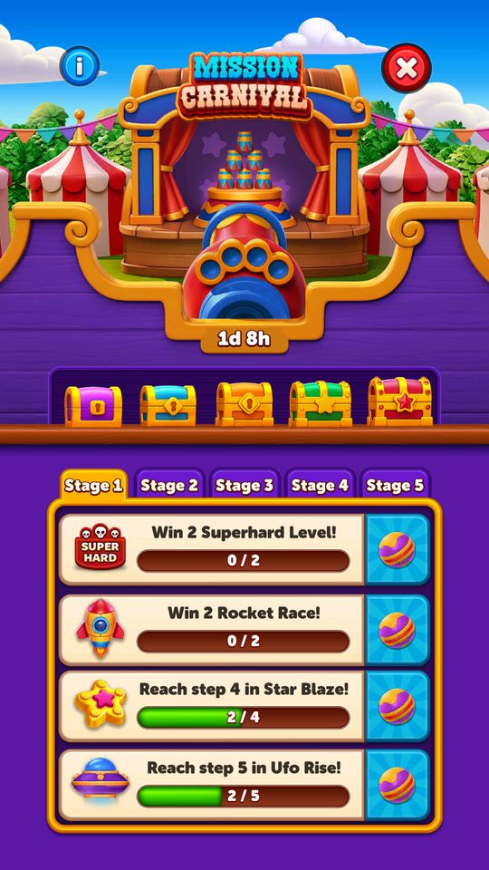
2 Rocket Race 0/2, đạt bậc 4 Star Blaze 2/4, đạt bậc 5 UFO Rise 2/5 (tiến độ tính từ sự kiện khác đang chạy)
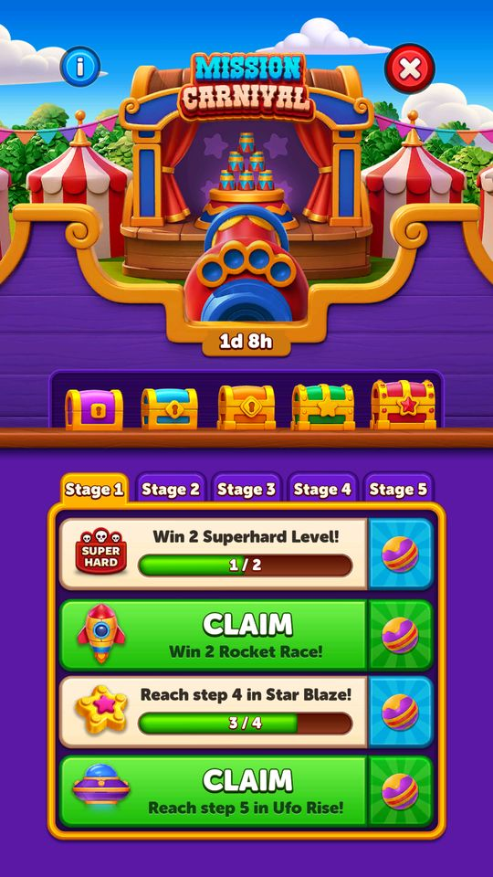
2 Rocket Race" và "Reach step 5 in UFO Rise" đã xong (nút CLAIM xanh); Super Hard 1/2, Star Blaze 3/4
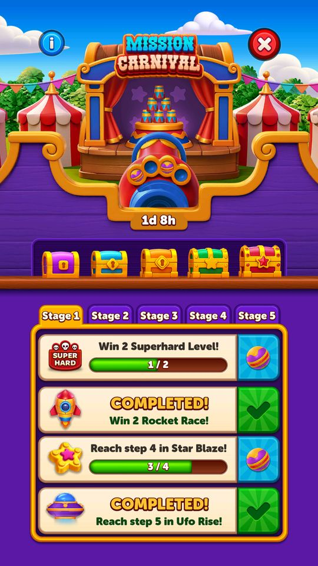
Đọc tiếp: Bộ ảnh event và trạng thái kiểm chứng ngày 13/10. Bài đó tách ảnh quan sát phiên mới với ảnh dựng bằng fixture; không dùng ảnh lịch sử ở đây để xác nhận case mới.
Cập nhật ảnh kiểm chứng 13/10/2026
OBSERVED-FIXTURE: ảnh chụp giao diện thật trong LDPlayer sau khi chuẩn bị trạng thái cục bộ và cô lập mạng. Case nhận Stage 1: gán bốn nhiệm vụ đủ điều kiện → bấm từng CLAIM → hàng nhiệm vụ thành COMPLETED → game chuyển phần nhiệm vụ sang Stage 2, rương Stage 1 còn nút Claim riêng. Popup rương hiển thị 1 giờ mạng và ba booster ×1. Ảnh Stage 5 là fixture hoàn tất khác, không phải tiếp tục chơi từ Stage 1.


 1 giờ mạng vô hạn, Freeze ×1, Rocket ×1 và UFO ×1. Ảnh xác nhận nội dung popup; chưa xác minh phần thưởng đã được server cấp hoặc đồng bộ thành công.
1 giờ mạng vô hạn, Freeze ×1, Rocket ×1 và UFO ×1. Ảnh xác nhận nội dung popup; chưa xác minh phần thưởng đã được server cấp hoặc đồng bộ thành công.
Nguồn: ảnh gốc screens/events_20261013/, caption được tuyển chọn trong facts/report_20261013/event_capture_manifest.json. Thiết lập, thao tác và giới hạn của từng case. Trạng thái gán trước không phải thành tích chơi; chỉ ghi nhận cấp thưởng cục bộ khi có snapshot đối soát.
Hồ sơ đầy đủ: MagicLab. Nguồn gốc: gdd/MagicLab.json; đây là phân tích mã/cấu hình, không mặc nhiên là case đã chạy.
Sky Jump (nhảy theo chặng)
Lớp nguồn: hồ sơ decompile/default đã có. Giá trị ở phần đối chiếu 10/10 phía trên được ưu tiên khi khác nhau; bảng dưới mô tả các đường có trong mã, không khẳng định mọi cổng đều bật.
Sự kiện ba chặng giống Jetpack Race về cấu trúc nhưng thưởng thuần coin và mốc mở sớm hơn. Thư mục Home/SkyJump (bản cũ) vẫn còn trong code bên cạnh Home/SkyJumpWithStage (bản đang dùng).
Điều kiện: SkyJumpWithStageConfigModel.FirstLevelToShow = 40, IsEnabled = true, EventType = 1.
Luồng: Cùng khuôn với Jetpack Race: SkyJumpWithStageStateType có thêm hai trạng thái riêng FinishedByLocal và FinishedByRemote (thay vì LocalTimeIsUp/RemoteTimeIsUp) — cho thấy sự kiện này kết thúc bằng việc hoàn thành chứ không chỉ bằng hết giờ. SkyJumpWithStageImpressionSource: LobbyIcon, EventJoin, EventEnd, ScoreIncreased.
| Use case | Kích hoạt / tiền điều kiện | Kết quả / quy tắc | Bằng chứng trong hồ sơ |
|---|---|---|---|
| Tham gia và tích điểm | Thắng màn trong kỳ; Đã đạt màn 40 | Tiến qua ba chặng; - | enum SkyJumpWithStagePopUpState; enum SkyJumpWithStageImpressionSource |
| Nhận thưởng theo chặng | Đạt mốc chặng; - | Nhận coin; 5.000 / 7.000 / 10.000 coin — đây là nguồn coin lớn nhất trong toàn bộ các sự kiện của game, gấp nhiều lần thưởng giải đấu | SkyJumpWithStageConfigModel.Stage1/2/3RewardsAsCoin |
| Kết thúc bằng hoàn thành hoặc hết giờ | Đạt chặng cuối hoặc hết thời gian; - | Chốt sự kiện; Hai trạng thái tách biệt để tránh lệch giữa máy và server | enum SkyJumpWithStageStateType |
Ảnh minh họa và cách đọc trạng thái
Lily Leap tách lời mời, lượt đã join, tiến độ 1/5 và thất bại ở 4/5. Số người giảm trong ảnh là trạng thái của lượt khảo sát; không dùng nó làm công thức tỷ lệ loại cho mọi lượt. Kho cũ chưa có ảnh thắng 5/5 và chia Grand Prize.
Nguồn ảnh lịch sử: phiên khảo sát 07/10/2026, screens/web/SkyJump/; đối chiếu caption và mã raw trong screens/web/screens.json. Các ảnh giữ trạng thái và giá của lần chụp, không đại diện lịch phát event hoặc giá hiện tại.

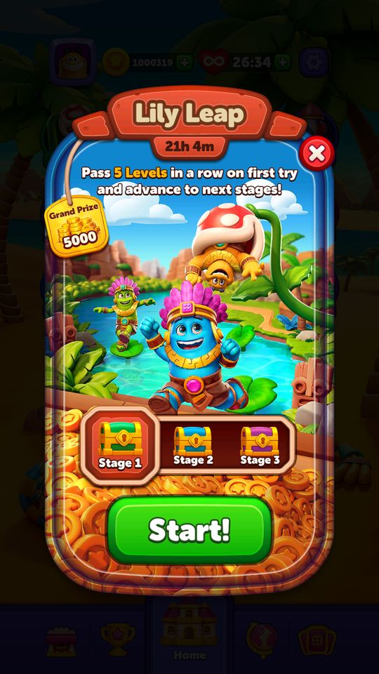
 3 rương Stage 1/2/3, Grand Prize 5.000 coin; nút Start
3 rương Stage 1/2/3, Grand Prize 5.000 coin; nút Start
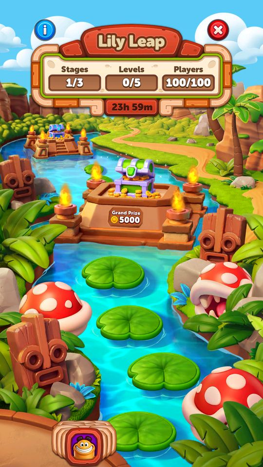
5.000 coin
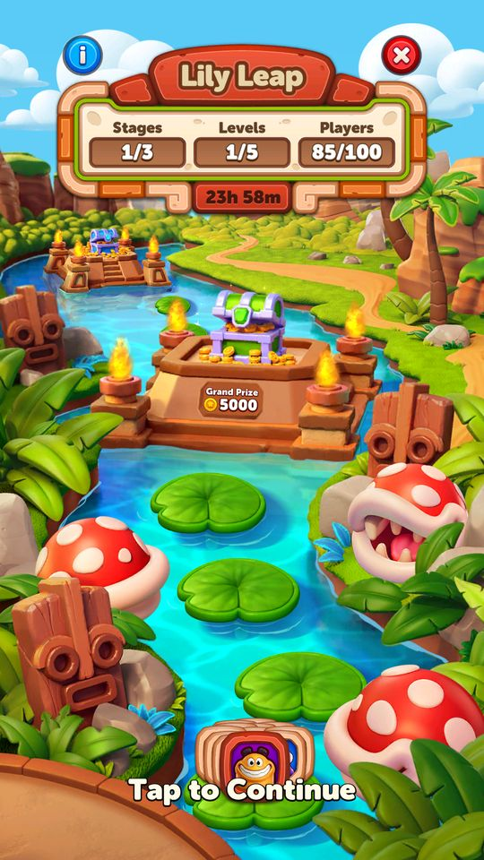

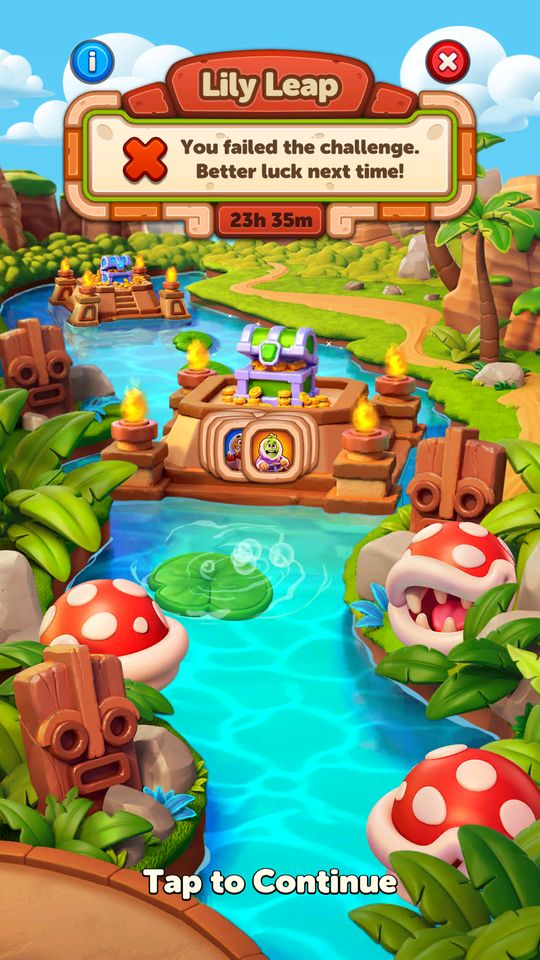
Đọc tiếp: Bộ ảnh event và trạng thái kiểm chứng ngày 13/10. Bài đó tách ảnh quan sát phiên mới với ảnh dựng bằng fixture; không dùng ảnh lịch sử ở đây để xác nhận case mới.
Cập nhật ảnh kiểm chứng 13/10/2026
OBSERVED-FIXTURE: ảnh chụp giao diện thật trong LDPlayer sau khi chuẩn bị trạng thái cục bộ và cô lập mạng. Nhánh thắng dùng tiến độ 5/5 và kết quả cache: quỹ 5.000 coin chia cho tổng 27 người, phần hiển thị 185. Bấm tiếp mới tới Lily Leap Rewards còn Tap to Claim; snapshot coin vẫn 996.179 nên chưa kết luận đã được trả 185. Nhánh thất bại dùng fixture riêng score = −1 để xem You failed the challenge.
 5.000 coin và You win 185; người chơi chia giải với 26 người thắng khác, tức tổng cộng 27 người theo kết quả đang cache. Đây là số liệu của fixture, không phải kết quả một cuộc đua live hiện tại.
5.000 coin và You win 185; người chơi chia giải với 26 người thắng khác, tức tổng cộng 27 người theo kết quả đang cache. Đây là số liệu của fixture, không phải kết quả một cuộc đua live hiện tại. 185 coin và vẫn còn Tap to Claim. Snapshot tại thời điểm này ghi 996.179 coin, chưa tăng so với đầu fixture; chưa thể kết luận 185 coin đã được cộng vào kho.
185 coin và vẫn còn Tap to Claim. Snapshot tại thời điểm này ghi 996.179 coin, chưa tăng so với đầu fixture; chưa thể kết luận 185 coin đã được cộng vào kho.
Nguồn: ảnh gốc screens/events_20261013/, caption được tuyển chọn trong facts/report_20261013/event_capture_manifest.json. Thiết lập, thao tác và giới hạn của từng case. Trạng thái gán trước không phải thành tích chơi; chỉ ghi nhận cấp thưởng cục bộ khi có snapshot đối soát.
Hồ sơ đầy đủ: SkyJump. Nguồn gốc: gdd/SkyJump.json; đây là phân tích mã/cấu hình, không mặc nhiên là case đã chạy.
Streak Tournament (giải đấu chuỗi thắng 24 giờ)
Lớp nguồn: hồ sơ decompile/default đã có. Giá trị ở phần đối chiếu 10/10 phía trên được ưu tiên khi khác nhau; bảng dưới mô tả các đường có trong mã, không khẳng định mọi cổng đều bật.
Giải đấu 24 giờ xếp hạng theo điểm tích được từ chuỗi thắng. Hệ số nhân giống GAE (1 / 5 / 10 / 25 / 100) nên giữ chuỗi dài là cách duy nhất leo lên top.
Điều kiện: StreakTournamentConfigModel.FirstLevelToShow = 25, IsTournamentEnable = true, IsBannerEnable = true.
Luồng: StreakTournamentConfigService đọc cấu hình; StreakTournamentService (35 method) quản lý điểm và bảng; StreakLeaderboardStateService (23 method) lo trạng thái bảng xếp hạng; StreakLeaderboardSwipeController cho vuốt. StreakTournamentStateType có một trạng thái đặc thù đáng chú ý: TimeIsUpButNotFetchedFinishedStateYet — hết giờ theo máy nhưng chưa lấy được kết quả chốt từ server. StreakTournamentBannerPlaceType (Win / Lose) cho thấy banner hiện ở cả màn thắng lẫn màn thua. StreakTournamentOpenedSource ghi nguồn mở: LobbyIcon, HomeReturn, HomeWelcome, ResultPopup.
| Use case | Kích hoạt / tiền điều kiện | Kết quả / quy tắc | Bằng chứng trong hồ sơ |
|---|---|---|---|
| Tích điểm theo chuỗi thắng | Thắng màn; Giải đang chạy | Điểm tăng nhanh khi giữ chuỗi; Multipliers 1 / 5 / 10 / 25 / 100 | StreakTournamentConfigModel.Multipliers |
| Nhận thưởng cuối giải | Hết 24 giờ; Có hạng | Nhận coin; Hạng 1: 1.000 coin, hạng 2: 500, hạng 3: 250, hạng 4–10: 100 (OtherRanksLimit = 10). TournamentDurationInHours = 24 | StreakTournamentConfigModel.Rewards |
| Chờ server chốt kết quả | Đồng hồ máy đã hết nhưng chưa có kết quả; - | Không hiển thị hạng sai do lệch giờ; Trạng thái này tồn tại riêng cho thấy studio đã gặp và xử lý vấn đề lệch giờ máy/server | enum StreakTournamentStateType |
| Banner sau mỗi màn | Kết thúc màn; IsBannerEnable = true | Nhắc người chơi về giải ngay sau mỗi màn; - | enum StreakTournamentBannerPlaceType; StreakTournamentConfigModel.IsBannerEnable |
| Popup tự mở khi lên hạng | Hạng tăng; ShouldOpenPopUpAutomaticallyOnRankUp = true | Người chơi thấy mình vừa vượt lên; - | StreakTournamentConfigModel; enum StreakTournamentOpenedSource |
Ảnh minh họa và cách đọc trạng thái
Luật giới thiệu, bảng hạng đang chạy và banner sau thua phải đọc riêng. Bảng x100 có 741 cờ rồi banner tụt về x1 minh họa rủi ro giảm tốc độ kiếm điểm; chỉ từ banner không được suy ra toàn bộ điểm xếp hạng đã bị xóa.
Nguồn ảnh lịch sử: phiên khảo sát 07/10/2026, screens/web/StreakTournament/; đối chiếu caption và mã raw trong screens/web/screens.json. Các ảnh giữ trạng thái và giá của lần chụp, không đại diện lịch phát event hoặc giá hiện tại.

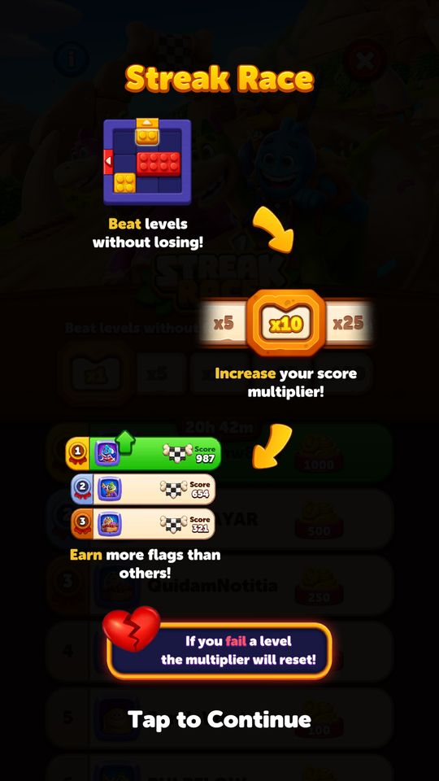

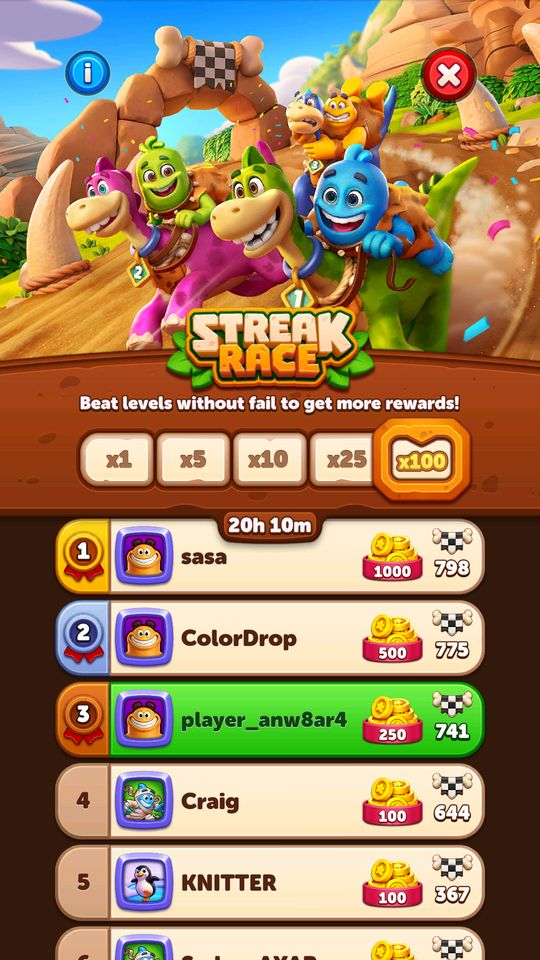
250 coin), hạng 1 có 798 cờ
Đọc tiếp: Bộ ảnh event và trạng thái kiểm chứng ngày 13/10. Bài đó tách ảnh quan sát phiên mới với ảnh dựng bằng fixture; không dùng ảnh lịch sử ở đây để xác nhận case mới.
Hồ sơ đầy đủ: StreakTournament. Nguồn gốc: gdd/StreakTournament.json; đây là phân tích mã/cấu hình, không mặc nhiên là case đã chạy.
Treasure Drill (pass trả phí theo nhiệm vụ)
Lớp nguồn: hồ sơ decompile/default đã có. Giá trị ở phần đối chiếu 10/10 phía trên được ưu tiên khi khác nhau; bảng dưới mô tả các đường có trong mã, không khẳng định mọi cổng đều bật.
Một dạng pass ngắn hạn phải mua mới nhận được thưởng: thắng màn để tiến qua các mốc, nhưng chỉ người đã mua mới mở khoá được thưởng. Điểm đáng chú ý nhất là giá bán chia theo phân khúc chi tiêu — cùng một sản phẩm nhưng năm mức giá khác nhau tuỳ backend xếp người chơi vào nhóm nào.
Điều kiện: TreasureDrillConfigModel.FirstLevelToShow = 110. IsEnabled = false ở cả client và server nên hiện đang tắt.
Luồng: TreasureDrillService (57 method) hỏi backend kỳ hiện tại qua FetchCurrentEvent / TryStartNewEvent(GetTreasureDrillEventResponse). Thắng màn -> TryIncreaseTaskProgress() (TreasureDrillTaskType chỉ có LevelWin=1). GetCurrentStep / GetProgress / GetStepModel(step) quản lý thang mốc; IsStepClaimable / IsStepClaimed / TryClaimStep(stepIndex) / ClaimStep(step) lo nhận thưởng; ClaimEligibleRewards và ClaimEligibleRewardsDirectly trao hàng loạt. Mua qua Purchase() với IAPConfigModel lấy từ GetSegmentedIAPConfigModel() — hàm này đọc GetSegment() rồi chọn đúng sản phẩm trong SegmentedIAPModel. HasUnseenProgress / GetLastSeenStep / SyncLastSeen / HasUnseenCompletedStep / GetLastUnseenCompletedStepIndex lo phần 'có gì mới' để chấm đỏ và animation. IsLastCompletedStepMilestone và ShouldForceShowPopup quyết định khi nào ép mở popup bán hàng. GetGrandPrize trả phần thưởng lớn nhất để quảng cáo.
| Use case | Kích hoạt / tiền điều kiện | Kết quả / quy tắc | Bằng chứng trong hồ sơ |
|---|---|---|---|
| Giá bán theo phân khúc chi tiêu | Mở popup Treasure Drill; - | Mỗi nhóm người chơi thấy một mức giá khác nhau; Năm phân khúc và giá tương ứng: non-purchaser 2$ (block.dragontreasure2), poor 5$, hamsi 10$, dolphin 15$, whale 25$. Tên phân khúc là thuật ngữ nội bộ — 'hamsi' là cá cơm trong tiếng Thổ Nhĩ Kỳ, nằm giữa 'poor' và 'dolphin'/'whale' | TreasureDrillService.GetSegment; GetSegmentedIAPConfigModel; TreasureDrillConfigModel.SegmentedIAPModel |
| Tiến mốc bằng cách thắng màn | Thắng màn; Kỳ đang chạy | Tiến độ tăng dù chưa mua; TreasureDrillTaskType chỉ có LevelWin=1 — nhiệm vụ duy nhất là thắng màn | TreasureDrillService.TryIncreaseTaskProgress; enum TreasureDrillTaskType |
| Mua rồi nhận bù toàn bộ | Bấm mua; Chưa mua | Nhận dồn thưởng của mọi mốc đã qua; IsPurchased() quyết định thưởng có mở khoá hay không | TreasureDrillService.Purchase; SetPurchased; TryGetClaimableStepsIndexes; ClaimEligibleRewards |
| Ép mở popup khi đạt mốc lớn | Vừa hoàn thành một mốc quan trọng; Chưa mua | Chào bán đúng lúc người chơi thấy tiếc nhất; Cơ chế kinh điển: cho tiến độ miễn phí rồi khoá thưởng sau tường trả phí | TreasureDrillService.IsLastCompletedStepMilestone; ShouldForceShowPopup; GetGrandPrize |
Ảnh minh họa và cách đọc trạng thái
Ảnh ép bật local trong phiên cũ, không phải bằng chứng backend phát Dragon Treasure cho mọi tài khoản. Ảnh cho thấy tutorial, giá mở quyền 52.000 VND và dải mốc tới 120; các ổ khóa chứng minh thưởng vẫn cần quyền kích hoạt. Chưa có ảnh mua thành công hoặc claim mốc của phiên đó.
Nguồn ảnh lịch sử: phiên khảo sát 07/10/2026, screens/web/TreasureDrill/; đối chiếu caption và mã raw trong screens/web/screens.json. Các ảnh giữ trạng thái và giá của lần chụp, không đại diện lịch phát event hoặc giá hiện tại.

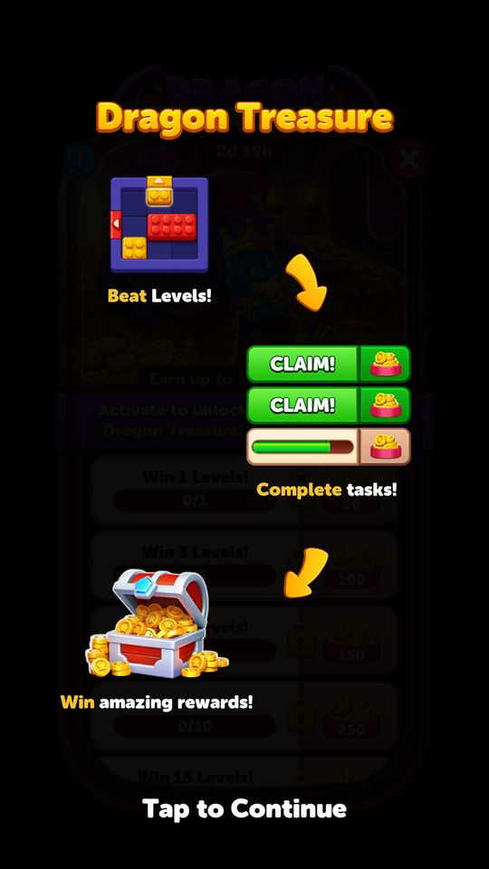

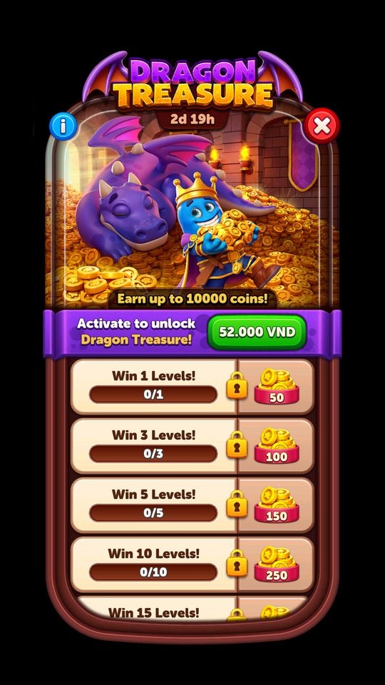
10000 coins!", nút Activate 52.000 VND (gói non-purchaser block.dragontreasure2); mốc: thắng 1 màn 50, 3 màn 100, 5 màn 150, 10 màn 250, 15 màn…
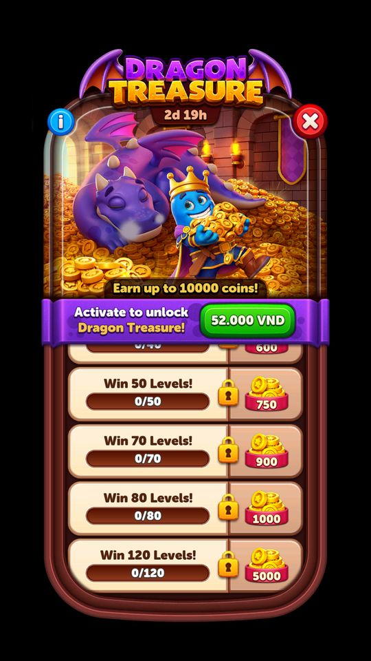
5.000 coinĐọc tiếp: Bộ ảnh event và trạng thái kiểm chứng ngày 13/10. Bài đó tách ảnh quan sát phiên mới với ảnh dựng bằng fixture; không dùng ảnh lịch sử ở đây để xác nhận case mới.
Cập nhật ảnh kiểm chứng 13/10/2026
OBSERVED-FIXTURE: ảnh chụp giao diện thật trong LDPlayer sau khi chuẩn bị trạng thái cục bộ và cô lập mạng. Case: mở Dragon Treasure bằng fixture, chưa kích hoạt gói; sau đó gán 12 lần thắng trong fixture riêng. Popup nhìn thấy giá 52.000 VND và các mốc cao vẫn khóa. Đủ tiến độ và có quyền nhận thưởng tiếp tục là hai điều kiện riêng; chưa mua hoặc claim trả phí.


Nguồn: ảnh gốc screens/events_20261013/, caption được tuyển chọn trong facts/report_20261013/event_capture_manifest.json. Thiết lập, thao tác và giới hạn của từng case. Trạng thái gán trước không phải thành tích chơi; chỉ ghi nhận cấp thưởng cục bộ khi có snapshot đối soát.
Hồ sơ đầy đủ: TreasureDrill. Nguồn gốc: gdd/TreasureDrill.json; đây là phân tích mã/cấu hình, không mặc nhiên là case đã chạy.
UFO Rise (leo thang có chốt an toàn)
Lớp nguồn: hồ sơ decompile/default đã có. Giá trị ở phần đối chiếu 10/10 phía trên được ưu tiên khi khác nhau; bảng dưới mô tả các đường có trong mã, không khẳng định mọi cổng đều bật.
Sự kiện leo thang: thắng màn thì UFO bay lên một bậc, thua thì rơi xuống — nhưng chỉ rơi tới chốt an toàn (checkpoint) gần nhất. Cơ chế chốt an toàn là thứ khiến sự kiện này dễ chịu hơn hẳn các sự kiện chuỗi thắng thuần tuý.
Điều kiện: UfoRiseConfigModel.FirstLevelToShow = 60, IsEnabled = true, EventType = 2. ShouldShowInLevelIcon = true nên có cả biểu tượng ngay trong màn chơi.
Luồng: UfoRiseActionState mô tả chuyển động của UFO: Rise (bay lên), Idle, Fall (rơi), RiseCheckpoint (bay lên chạm chốt), Checkpoint (đang ở chốt). UfoRiseUfoState là bản chi tiết hơn cho phần hiển thị, có thêm IdleBanner và FallPopup. Cache 10/10 có 11 mốc từ 0 tới 120, với checkpoint 0, 5, 13, 28, 46, 120. Mốc 0 là điểm xuất phát không có rewardModel. Thắng màn -> lên bậc; thua -> rơi về chốt gần nhất phía dưới. UfoRisePopUpState (FirstShowEver, FirstShow, InProgress, Result) quyết định nội dung popup; UfoRiseSource ghi nguồn mở (LobbyIcon, EventStart, EventFinish, EventClaimRewards, TryAgain).
| Use case | Kích hoạt / tiền điều kiện | Kết quả / quy tắc | Bằng chứng trong hồ sơ |
|---|---|---|---|
| Thắng màn, UFO bay lên | Thắng một màn; Sự kiện đang chạy | Tiến lên một bậc, có thể nhận quà; Mốc cache 10/10: 0, 2, 5, 8, 13, 20, 28, 36, 46, 77, 120; mốc 0 chưa có reward | enum UfoRiseActionState; UfoRiseConfigModel.Steps |
| Thua màn, rơi về chốt an toàn | Thua một màn; - | Mất tiến độ nhưng không về 0; Checkpoint cache 10/10 là 0, 5, 13, 28, 46, 120; các khoảng là 5, 8, 15, 18, 74. Mốc 77 có quà nhưng không phải checkpoint | enum UfoRiseActionState; enum UfoRiseUfoState; UfoRiseConfigModel.Steps[].IsCheckpoint |
| Nhận thưởng đỉnh thang | Đạt bậc 120 theo cache 10/10; - | Phần thưởng đáng kể nhất của sự kiện; Bậc 120: thường 1200coin + Rocket1 + Freeze1 + UFO1 + mạng1giờ; WithCollection 200coin + PackType4 + mạng1giờ + Rocket1 + UFO1 | UfoRiseConfigModel.Steps[10] |
| Biểu tượng ngay trong màn chơi | Vào màn; ShouldShowInLevelIcon = true | Tăng áp lực tâm lý ngay lúc chơi; Đây là sự kiện duy nhất có cờ ShouldShowInLevelIcon | UfoRiseConfigModel.ShouldShowInLevelIcon |
Ảnh minh họa và cách đọc trạng thái
Đối chiếu tháp đang chạy, màn nhận quà, checkpoint 5 và trạng thái Finished. Mốc 2 có thể hiển thị pack khi Collection chạy; vì vậy không đọc ảnh phần thưởng với nhánh config coin thông thường. Ảnh cũ tới các mốc đầu chưa xác nhận nhánh rơi 77→46 hoặc hoàn tất 120.
Nguồn ảnh lịch sử: phiên khảo sát 07/10/2026, screens/web/UfoRise/; đối chiếu caption và mã raw trong screens/web/screens.json. Các ảnh giữ trạng thái và giá của lần chụp, không đại diện lịch phát event hoặc giá hiện tại.
 50 coin; UFO ở mốc 0
50 coin; UFO ở mốc 0 2 UFO Rise: "Congratulations!" — gói thẻ cam (Collection pack) — Tap to Claim
2 UFO Rise: "Congratulations!" — gói thẻ cam (Collection pack) — Tap to Claim 15 phút mạng vô hạn đã nhận; mốc kế 8 và 13
15 phút mạng vô hạn đã nhận; mốc kế 8 và 13
Đọc tiếp: Bộ ảnh event và trạng thái kiểm chứng ngày 13/10. Bài đó tách ảnh quan sát phiên mới với ảnh dựng bằng fixture; không dùng ảnh lịch sử ở đây để xác nhận case mới.
Cập nhật ảnh kiểm chứng 13/10/2026
OBSERVED-FIXTURE: ảnh chụp giao diện thật trong LDPlayer sau khi chuẩn bị trạng thái cục bộ và cô lập mạng. Case đỉnh: gán 120, lần thấy trước 119, mốc đã nhận index 9 → game xử lý rương cuối; snapshot coin tăng 996.179 → 997.379 và index 9 → 10. Case checkpoint độc lập: trạng thái sau rơi 76 → 46, mốc 77 và 120 còn đóng. Ảnh sau rơi không ghi animation thua và không phải 76 ván đã chơi.

 1.200 coin, Rocket ×1, Freeze ×1, UFO ×1 và 1 giờ mạng vô hạn. Snapshot riêng ghi coin cục bộ tăng 996.179 → 997.379 và chỉ số mốc đã nhận tăng 9 → 10; đây là phần thưởng được cộng cục bộ trong fixture.
1.200 coin, Rocket ×1, Freeze ×1, UFO ×1 và 1 giờ mạng vô hạn. Snapshot riêng ghi coin cục bộ tăng 996.179 → 997.379 và chỉ số mốc đã nhận tăng 9 → 10; đây là phần thưởng được cộng cục bộ trong fixture.
Nguồn: ảnh gốc screens/events_20261013/, caption được tuyển chọn trong facts/report_20261013/event_capture_manifest.json. Thiết lập, thao tác và giới hạn của từng case. Trạng thái gán trước không phải thành tích chơi; chỉ ghi nhận cấp thưởng cục bộ khi có snapshot đối soát.
Hồ sơ đầy đủ: UfoRise. Nguồn gốc: gdd/UfoRise.json; đây là phân tích mã/cấu hình, không mặc nhiên là case đã chạy.
Weekly Tournament (giải tuần)
Lớp nguồn: hồ sơ decompile/default đã có. Giá trị ở phần đối chiếu 10/10 phía trên được ưu tiên khi khác nhau; bảng dưới mô tả các đường có trong mã, không khẳng định mọi cổng đều bật.
Giải đấu chu kỳ tuần, thưởng cao hơn giải chuỗi 24 giờ. Mở sớm nhất trong các giải (từ màn 21).
Điều kiện: WeeklyTournamentConfigModel.FirstLevelToShow = 21, IsTournamentEnable = true.
Luồng: Cùng khuôn với các giải khác. WeeklyTournamentStateType có hai trạng thái xử lý lệch giờ rất rõ: NotFinishedAtBackendResponseButTimeIsUp (máy thấy hết giờ, server chưa chốt) và FinishedAtBackendResponseButTimeIsNotUp (server đã chốt, máy chưa thấy hết giờ). WeeklyTournamentLeaderboardController hiển thị bảng.
| Use case | Kích hoạt / tiền điều kiện | Kết quả / quy tắc | Bằng chứng trong hồ sơ |
|---|---|---|---|
| Tích điểm trong tuần | Thắng màn; Giải đang chạy | Leo bảng xếp hạng tuần; - | WeeklyTournamentService |
| Nhận thưởng cuối tuần | Hết kỳ; Có hạng | Nhận coin; Hạng 1: 2.000 coin, hạng 2: 1.000, hạng 3: 500. Không có thưởng cho hạng ngoài top 3 (khác với Streak và Arena) | WeeklyTournamentConfigModel.Rewards |
| Tự mở popup kết quả | Về Home hoặc mở app khi có kết quả; ShouldOpenAutomaticallyOnLobbyReturnOnResult / OnSessionStartOnResult = true | Người chơi không bỏ lỡ thưởng; Hai cờ riêng cho hai thời điểm | WeeklyTournamentConfigModel |
| Xử lý lệch giờ máy và server | Hai bên không thống nhất; - | Không hiện kết quả sai; Server luôn là nguồn chân lý | enum WeeklyTournamentStateType |
Ảnh minh họa và cách đọc trạng thái
Một ảnh là tuần mới đang chạy, một ảnh là tuần trước đã kết thúc ở hạng 10 không có thưởng. Finished không đồng nghĩa người chơi được thưởng; hạng cuối và dải thưởng phải được xét trước khi viết case claim.
Nguồn ảnh lịch sử: phiên khảo sát 07/10/2026, screens/web/WeeklyTournament/; đối chiếu caption và mã raw trong screens/web/screens.json. Các ảnh giữ trạng thái và giá của lần chụp, không đại diện lịch phát event hoặc giá hiện tại.

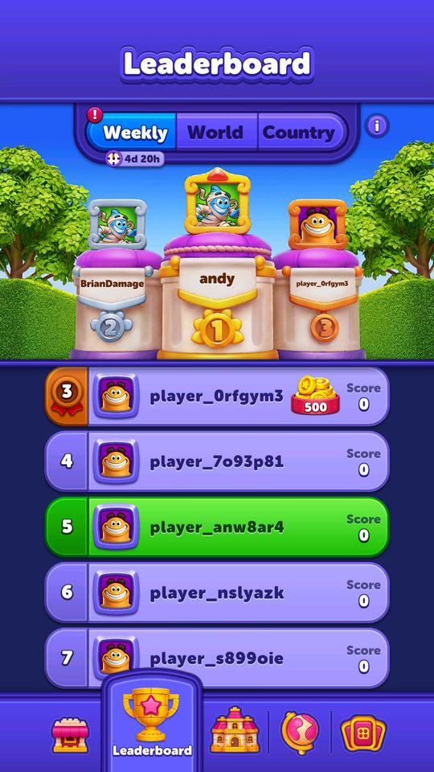
500 coin; mình hạng 5, 0 điểm
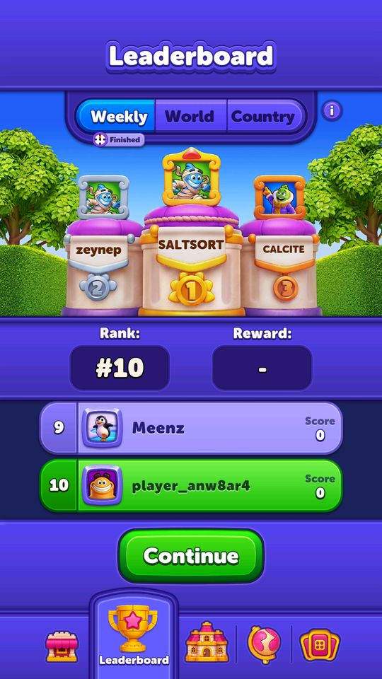
Đọc tiếp: Bộ ảnh event và trạng thái kiểm chứng ngày 13/10. Bài đó tách ảnh quan sát phiên mới với ảnh dựng bằng fixture; không dùng ảnh lịch sử ở đây để xác nhận case mới.
Cập nhật ảnh kiểm chứng 13/10/2026
OBSERVED-FIXTURE: ảnh chụp giao diện thật trong LDPlayer sau khi chuẩn bị trạng thái cục bộ và cô lập mạng. Case: chuẩn bị tuần đã kết thúc và người chơi hạng 1 với 1.000 điểm → Weekly Finished hiển thị podium, Rank #1 và Reward 2.000 coin. Không nhấn Continue, do đó đây là bằng chứng trình bày kết quả/thưởng dự kiến, chưa phải bằng chứng cộng coin.
 2.000 coin. Nút Continue chưa được nhấn.
2.000 coin. Nút Continue chưa được nhấn.Nguồn: ảnh gốc screens/events_20261013/, caption được tuyển chọn trong facts/report_20261013/event_capture_manifest.json. Thiết lập, thao tác và giới hạn của từng case. Trạng thái gán trước không phải thành tích chơi; chỉ ghi nhận cấp thưởng cục bộ khi có snapshot đối soát.
Hồ sơ đầy đủ: WeeklyTournament. Nguồn gốc: gdd/WeeklyTournament.json; đây là phân tích mã/cấu hình, không mặc nhiên là case đã chạy.